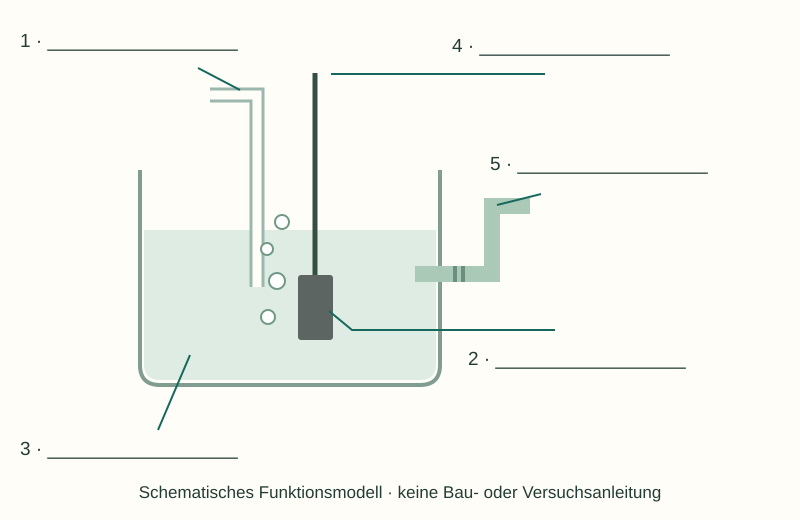

Informieren
Erklärung und Beispiel öffnen
Eine gemeinsame Null für Potentialwerte
Die Normalwasserstoffelektrode (NWE), hier im Sinn der Standardwasserstoffelektrode, dient als Bezug. Ihr Standardpotential ist E°(H⁺/H₂) = 0 V – dieser Wert wird festgelegt. Er besagt nicht, dass an der Oberfläche keine Ladungstrennung existiert.
An einer platinierten Platinoberfläche können Wasserstoffmoleküle und gelöste H⁺-Ionen Elektronen austauschen. Platin leitet Elektronen und katalysiert die Einstellung des Gleichgewichts; es wird in dieser Elektrodenreaktion nicht verbraucht. Der Elektrolyt leitet über Ionen. Die Verbindung zur Partnerhalbzelle ermöglicht den inneren Ladungsausgleich.
2 H⁺(aq) + 2 e⁻ ⇌ H₂(g)
Für den Standardzustand gelten die Protonenaktivität a(H⁺) = 1 und näherungsweise ein Wasserstoff-Partialdruck von 1 bar (ideales Gas). Aktivität ist eine dimensionslose Größe, die die wirksame chemische Beteiligung berücksichtigt. „c(H⁺) = 1 mol/L“ ist nur die schulische Konzentrationsnäherung; eine reale 1-molare Säure erfüllt nicht automatisch a(H⁺) = 1.
Beispiel: die NWE zusammen mit Silber
E°(Ag⁺/Ag) = +0,80 V liegt höher als 0 V. Beim galvanischen Entladen wird an Silber Ag⁺ reduziert. An der NWE wird Wasserstoff oxidiert: H₂ → 2 H⁺ + 2 e⁻. Sie ist hier Anode und Minuspol. Die ideale Standardzellspannung beträgt 0,80 V. Die Rolle der NWE hängt also von ihrer Partnerhalbzelle ab.
A · Bestandteile und Bedingungen zuordnen

Unbeschriftetes Schema herunterladen (SVG)

- Beschrifte die fünf Bestandteile bzw. Verbindungen. Ergänze die zur Referenzelektrode gehörenden Druck- und Aktivitätsbedingungen.
- Erkläre zu jeder Nummer die Funktion. Begründe insbesondere, warum die Platinoberfläche und eine ionenleitende Verbindung benötigt werden.
- Schreibe die reversible Elektrodenreaktion und erkläre, was an der Angabe „0 V“ eine Festlegung ist.
Hilfe 1
Trenne Stoffzufuhr, Reaktionsoberfläche, Lösung, äußeren Elektronentransport und inneren Ionentransport.
Hilfe 2
Die Reaktion verbindet H⁺ und H₂. Einer der Stoffe ist gasförmig, der andere liegt in der Lösung vor. Platin kommt in der ausgeglichenen Reaktionsgleichung nicht vor.
Musterlösung
- 1: H₂-Zufuhr, p(H₂) = 1 bar im idealen Gasmodell. 2: platinierte Platinoberfläche. 3: protonenhaltiger Elektrolyt, a(H⁺) = 1. 4: elektrischer Anschluss. 5: ionenleitende Verbindung zur Partnerhalbzelle.
- 1 stellt H₂ bereit; 2 ermöglicht den Elektronenaustausch an einer katalytisch wirksamen Oberfläche und leitet Elektronen; 3 stellt H⁺ bereit und leitet über Ionen; 4 verbindet mit dem äußeren Stromkreis bzw. Messgerät; 5 ermöglicht Ionenleitung zwischen den Lösungen, ohne dass Elektronen durch die Lösung fließen müssen.
- 2 H⁺ + 2 e⁻ ⇌ H₂. Die Zuordnung E° = 0 V bestimmt den Nullpunkt der Potentialskala. Sie ist kein experimenteller Nachweis eines absoluten Potentials von null.
Für die hier benutzten Zahlen gilt 25 °C. Eine Konzentration von 1 mol/L ersetzt die Aktivitätsbedingung nur näherungsweise.
B · Ist die NWE immer der Minuspol?
Die NWE wird gedanklich einmal mit Zn²⁺/Zn (E° = −0,76 V) und einmal mit Cu²⁺/Cu (E° = +0,34 V) kombiniert. Beide Zellen sollen unter Standardbedingungen galvanisch entladen werden.
- Bestimme jeweils die Rolle und Polung der NWE. Formuliere ihre Teilreaktion in der tatsächlichen Entladerichtung.
- Bestimme die Gegenreaktion, die Elektronenflussrichtung im äußeren Leiter und die ideale Zellspannung.
- Ein Voltmeter hat in beiden Fällen seinen roten Anschluss an der NWE und COM am Metall. Welche Vorzeichen zeigt es an?
Hilfe 1
Die Halbzelle mit höherem Reduktionspotential wird bei der freiwilligen Reaktion reduziert. Vergleiche jeden Partner getrennt mit 0 V.
Hilfe 2
Ist der Partnerwert negativ, liegt die NWE höher. Für die Anzeige des Voltmeters rechne 0 V minus den Potentialwert des Metalls.
Musterlösung
- NWE/Zink: NWE = Kathode, Pluspol; 2 H⁺ + 2 e⁻ → H₂. Zink = Anode, Minuspol; Zn → Zn²⁺ + 2 e⁻. Elektronen fließen außen vom Zink zur Pt-Oberfläche. U° = 0 − (−0,76) = 0,76 V. Die beschriebene Messanordnung zeigt +0,76 V.
- NWE/Kupfer: NWE = Anode, Minuspol; H₂ → 2 H⁺ + 2 e⁻. Kupfer = Kathode, Pluspol; Cu²⁺ + 2 e⁻ → Cu. Elektronen fließen von der Pt-Oberfläche zum Kupfer. U° = 0,34 − 0 = 0,34 V. Rot an NWE und COM an Cu ergibt jedoch −0,34 V.
Die NWE hat eine feste Referenzfunktion, aber keine von der Partnerhalbzelle unabhängige Polung.
Zurück zur Checkliste
Kannst du den Punkt jetzt an einer eigenen Erklärung oder einer neuen Aufgabe nachweisen? Ordne dich ein: sicher (selbstständig), teils (mit Hilfe) oder offen (noch Lernbedarf). Notiere bei Bedarf, was du noch klären möchtest.
Fachliche Quellen und Modellgrenzen
- IUPAC Gold Book · Standard hydrogen electrode
- IUPAC Gold Book · Standard pressure
- OpenStax · Chemistry 2e, 17.3: Electrode and Cell Potentials
Der Standardzustand wird über Aktivität und Gasdruck beschrieben. 1 mol/L ist nur eine Konzentrationsnäherung. Die Skizzen erläutern die Funktion und sind keine Durchführungsanleitung.
Eigene Erklärungen, Aufgaben und Grafiken. Zahlenbeispiele sind didaktisch gewählt; konstruierte Messdaten sind ausdrücklich gekennzeichnet.